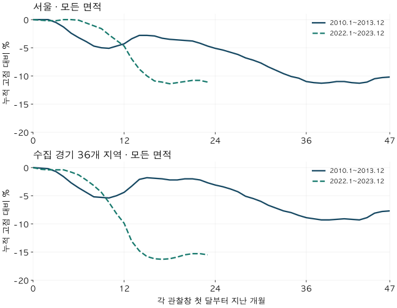

가격의 긴 흐름 · 두 침체기 비교
2010~2013년과 2022~2023년 아파트 침체기: 낙폭·기간·거래량 비교
서울·수집 경기의 두 침체기를 같은 자체 지수로 비교합니다. 최대 낙폭과 걸린 기간, 월평균 거래량, 금리·정책 배경 및 역사 반복으로 읽으면 안 되는 이유를 확인하세요.
분석 기간 · 2010.1~2013.12 · 2022.1~2023.12 · 서울·수집 경기 | 자료 기준일 · 2026-10-04
“지난 침체기처럼 몇 년 더 내려갈까?”라는 질문에는 낙폭 하나로 답하기 어렵습니다. 비슷하게 떨어졌어도 걸린 시간과 거래 환경이 다를 수 있습니다. 서울과 수집 경기 36지역의 2010~2013년, 2022~2023년을 같은 자체 모형지수로 비교했습니다.
서울의 창 안 최대 낙폭은 각각 11.3%와 11.4%였지만, 고점에서 저점까지는 41개월과 18개월이었습니다. 수집 경기에서는 최근 창의 낙폭이 더 컸습니다. 다만 첫 창은 48개월, 최근 창은 24개월이고, 2010년 이전 고점은 자료에 없습니다. 이 비교로 다음 하락의 길이나 바닥을 예측할 수는 없습니다.
1. 두 침체기를 어떻게 비교했나?
주 관찰창은 2010년 1월~2013년 12월과 2022년 1월~2023년 12월입니다. 이 날짜는 비교를 위해 고정한 창이며, 실제 경기침체의 시작과 끝을 판정한 날짜가 아닙니다. 특히 2010년 이전 고점을 포함하지 못하므로 첫 창의 낙폭을 전체 하락기의 손실로 읽으면 안 됩니다.
가격은 모든 면적의 실거래 자료를 바탕으로 추정한 자체 월간 지수입니다. 현재 측정 재고의 세대수를 가중하고, 인접 두 달과 기준월에 가격이 있는 주택으로 변화율을 연결했습니다. 실제 거래 중앙값이나 KB 공표 지수와는 대상·가중치가 다릅니다. 기존 2022년 KB 지수 하락 비교와 숫자가 같아야 하는 분석은 아닙니다.
최대 낙폭은 먼저 나온 고점에서 뒤의 저점까지 계산합니다. 예를 들어 나중에 오른 가격을 과거의 하락 출발점으로 쓰지 않습니다. 기간은 그 고점부터 저점까지의 월수이며, 회복까지 걸린 기간은 별도 질문입니다.
2. 낙폭이 비슷하면 하락 과정도 비슷했을까?
서울은 낙폭이 비슷해도 걸린 시간이 달랐고, 수집 경기는 최근 관찰창의 낙폭이 더 컸습니다. 시작에서 끝까지의 변화와 창 안 최대 낙폭을 나란히 보면, 중간 저점 뒤 반등을 놓치지 않을 수 있습니다.
| 지역·기간 | 시작→끝 | 최대 낙폭 | 고점→저점 | 개월 |
|---|---|---|---|---|
| 서울 · 2010.1~2013.12 | -8.9% | -11.3% | 2010-03→2013-08 | 41 |
| 서울 · 2022.1~2023.12 | -11.1% | -11.4% | 2022-01→2023-07 | 18 |
| 수집 경기 36지역 · 2010.1~2013.12 | -7.7% | -9.3% | 2010-01→2013-03 | 38 |
| 수집 경기 36지역 · 2022.1~2023.12 | -15.5% | -16.3% | 2022-01→2023-06 | 17 |

서울은 첫 창에서 2010년 3월 고점부터 2013년 8월 저점까지 41개월, 최근 창에서는 2022년 1월부터 2023년 7월까지 18개월이었습니다. 이 지수의 월별 추정에는 오래된 가격도 포함되므로 실제 거래가 급변한 날짜를 정확히 짚는 시계로 쓰면 안 됩니다.
같은 24개월만 보면 어떻게 달라질까?
첫 창을 2010년 1월~2011년 12월로 제한하면 서울 최대 낙폭은 5.1%, 수집 경기는 5.4%입니다. 따라서 “두 시기의 서울 낙폭은 같았다”는 말에는 서로 다른 길이의 창을 끝까지 관찰했다는 조건이 붙습니다. 아래 보조 비교가 원래 2010~2013년 결과를 대체하지는 않습니다.
| 지역·기간 | 시작→끝 | 최대 낙폭 | 고점→저점 | 개월 |
|---|---|---|---|---|
| 서울 · 2010.1~2011.12 | -3.3% | -5.1% | 2010-03→2010-11 | 8 |
| 수집 경기 36지역 · 2010.1~2011.12 | -2.7% | -5.4% | 2010-01→2010-11 | 10 |
면적을 84형으로 제한한 비교
84형은 전용 25·26평형을 묶었습니다. 모형 기준면적으로 약 82.6·86.0㎡이며 정확히 84㎡만 고른 표가 아닙니다. 서울 최대 낙폭은 첫 창 11.7%, 최근 창 12.6%로 모든 면적의 결과와 조금 다릅니다. 면적 묶음의 기준을 확인하세요.
| 지역·기간 | 시작→끝 | 최대 낙폭 | 고점→저점 | 개월 |
|---|---|---|---|---|
| 서울 · 2010.1~2013.12 | -9.4% | -11.7% | 2010-02→2013-03 | 37 |
| 서울 · 2022.1~2023.12 | -12.2% | -12.6% | 2022-01→2023-07 | 18 |
| 서울 · 2010.1~2011.12 | -4.4% | -5.0% | 2010-02→2010-11 | 9 |
| 수집 경기 36지역 · 2010.1~2013.12 | -8.6% | -11.3% | 2010-01→2013-03 | 38 |
| 수집 경기 36지역 · 2022.1~2023.12 | -16.7% | -18.1% | 2022-01→2023-05 | 16 |
| 수집 경기 36지역 · 2010.1~2011.12 | -4.3% | -6.6% | 2010-01→2010-10 | 9 |
모든 면적 · 2010.1~2013.12 월별 표
| 월 | 서울 | 수집 경기 36지역 |
|---|---|---|
| 2010-01 | 0.0 | 0.0 |
| 2010-02 | 0.0 | -0.1 |
| 2010-03 | 0.0 | -0.2 |
| 2010-04 | -0.5 | -0.7 |
| 2010-05 | -1.3 | -1.6 |
| 2010-06 | -2.4 | -2.7 |
| 2010-07 | -3.2 | -3.6 |
| 2010-08 | -3.9 | -4.4 |
| 2010-09 | -4.7 | -5.2 |
| 2010-10 | -5.0 | -5.3 |
| 2010-11 | -5.1 | -5.4 |
| 2010-12 | -4.7 | -5.0 |
| 2011-01 | -4.3 | -4.4 |
| 2011-02 | -3.4 | -3.3 |
| 2011-03 | -2.8 | -2.1 |
| 2011-04 | -2.8 | -1.8 |
| 2011-05 | -2.9 | -1.9 |
| 2011-06 | -3.3 | -2.0 |
| 2011-07 | -3.5 | -2.2 |
| 2011-08 | -3.6 | -2.2 |
| 2011-09 | -3.7 | -2.0 |
| 2011-10 | -3.8 | -2.0 |
| 2011-11 | -4.2 | -2.2 |
| 2011-12 | -4.7 | -2.7 |
| 2012-01 | -5.1 | -3.1 |
| 2012-02 | -5.4 | -3.4 |
| 2012-03 | -5.8 | -3.8 |
| 2012-04 | -6.2 | -4.3 |
| 2012-05 | -6.8 | -5.1 |
| 2012-06 | -7.2 | -5.5 |
| 2012-07 | -7.7 | -6.0 |
| 2012-08 | -8.4 | -6.7 |
| 2012-09 | -9.0 | -7.2 |
| 2012-10 | -9.6 | -7.7 |
| 2012-11 | -10.1 | -8.0 |
| 2012-12 | -10.4 | -8.5 |
| 2013-01 | -11.0 | -8.9 |
| 2013-02 | -11.2 | -9.1 |
| 2013-03 | -11.3 | -9.3 |
| 2013-04 | -11.2 | -9.3 |
| 2013-05 | -11.0 | -9.2 |
| 2013-06 | -11.0 | -9.1 |
| 2013-07 | -11.2 | -9.2 |
| 2013-08 | -11.3 | -9.3 |
| 2013-09 | -11.1 | -8.9 |
| 2013-10 | -10.5 | -8.1 |
| 2013-11 | -10.3 | -7.8 |
| 2013-12 | -10.2 | -7.7 |
모든 면적 · 2022.1~2023.12 월별 표
| 월 | 서울 | 수집 경기 36지역 |
|---|---|---|
| 2022-01 | 0.0 | 0.0 |
| 2022-02 | -0.1 | -0.3 |
| 2022-03 | -0.2 | -0.4 |
| 2022-04 | -0.2 | -0.4 |
| 2022-05 | 0.0 | -0.4 |
| 2022-06 | 0.0 | -0.8 |
| 2022-07 | -0.1 | -1.3 |
| 2022-08 | -0.6 | -2.2 |
| 2022-09 | -1.1 | -3.2 |
| 2022-10 | -1.6 | -4.4 |
| 2022-11 | -2.7 | -6.2 |
| 2022-12 | -3.7 | -8.2 |
| 2023-01 | -4.7 | -9.9 |
| 2023-02 | -7.0 | -13.1 |
| 2023-03 | -8.8 | -14.8 |
| 2023-04 | -10.0 | -15.8 |
| 2023-05 | -10.9 | -16.2 |
| 2023-06 | -11.1 | -16.3 |
| 2023-07 | -11.4 | -16.2 |
| 2023-08 | -11.2 | -15.9 |
| 2023-09 | -11.0 | -15.5 |
| 2023-10 | -10.8 | -15.3 |
| 2023-11 | -10.8 | -15.3 |
| 2023-12 | -11.1 | -15.5 |
84형 · 전용 25·26평형 · 2010.1~2013.12 월별 표
| 월 | 서울 | 수집 경기 36지역 |
|---|---|---|
| 2010-01 | 0.0 | 0.0 |
| 2010-02 | 0.0 | -0.5 |
| 2010-03 | -0.2 | -0.7 |
| 2010-04 | -0.8 | -1.5 |
| 2010-05 | -1.6 | -2.4 |
| 2010-06 | -2.6 | -3.4 |
| 2010-07 | -3.2 | -4.4 |
| 2010-08 | -3.9 | -5.3 |
| 2010-09 | -4.6 | -6.4 |
| 2010-10 | -5.0 | -6.6 |
| 2010-11 | -5.0 | -6.5 |
| 2010-12 | -4.6 | -6.0 |
| 2011-01 | -4.3 | -5.4 |
| 2011-02 | -3.4 | -4.1 |
| 2011-03 | -2.9 | -2.9 |
| 2011-04 | -2.9 | -2.7 |
| 2011-05 | -3.1 | -2.9 |
| 2011-06 | -3.4 | -3.2 |
| 2011-07 | -3.8 | -3.5 |
| 2011-08 | -3.7 | -3.6 |
| 2011-09 | -4.0 | -3.5 |
| 2011-10 | -4.0 | -3.5 |
| 2011-11 | -4.5 | -3.8 |
| 2011-12 | -5.0 | -4.3 |
| 2012-01 | -5.3 | -4.8 |
| 2012-02 | -5.6 | -5.3 |
| 2012-03 | -6.0 | -5.6 |
| 2012-04 | -6.5 | -6.2 |
| 2012-05 | -7.2 | -7.1 |
| 2012-06 | -7.3 | -7.6 |
| 2012-07 | -8.0 | -8.1 |
| 2012-08 | -8.7 | -8.9 |
| 2012-09 | -9.3 | -9.4 |
| 2012-10 | -10.0 | -9.9 |
| 2012-11 | -10.6 | -10.2 |
| 2012-12 | -10.9 | -10.5 |
| 2013-01 | -11.5 | -11.0 |
| 2013-02 | -11.6 | -11.3 |
| 2013-03 | -11.7 | -11.3 |
| 2013-04 | -11.6 | -11.1 |
| 2013-05 | -11.4 | -10.8 |
| 2013-06 | -11.2 | -10.7 |
| 2013-07 | -11.5 | -10.8 |
| 2013-08 | -11.4 | -10.9 |
| 2013-09 | -11.1 | -10.3 |
| 2013-10 | -10.4 | -9.3 |
| 2013-11 | -10.1 | -8.8 |
| 2013-12 | -10.1 | -8.6 |
84형 · 전용 25·26평형 · 2022.1~2023.12 월별 표
| 월 | 서울 | 수집 경기 36지역 |
|---|---|---|
| 2022-01 | 0.0 | 0.0 |
| 2022-02 | -0.2 | -0.4 |
| 2022-03 | -0.3 | -0.8 |
| 2022-04 | -0.2 | -1.0 |
| 2022-05 | -0.2 | -1.2 |
| 2022-06 | -0.3 | -1.8 |
| 2022-07 | -0.5 | -2.5 |
| 2022-08 | -1.1 | -3.7 |
| 2022-09 | -1.7 | -4.8 |
| 2022-10 | -2.1 | -6.1 |
| 2022-11 | -3.5 | -8.2 |
| 2022-12 | -4.9 | -10.3 |
| 2023-01 | -5.8 | -12.4 |
| 2023-02 | -8.3 | -15.7 |
| 2023-03 | -10.1 | -17.2 |
| 2023-04 | -11.3 | -17.9 |
| 2023-05 | -12.3 | -18.1 |
| 2023-06 | -12.5 | -18.0 |
| 2023-07 | -12.6 | -17.7 |
| 2023-08 | -12.4 | -17.3 |
| 2023-09 | -12.1 | -16.8 |
| 2023-10 | -11.9 | -16.5 |
| 2023-11 | -11.9 | -16.4 |
| 2023-12 | -12.2 | -16.7 |
3. 서울·경기의 모든 지역이 같은 패턴이었나?
그렇지 않습니다. 모든 면적에서 두 창의 비교 조건을 모두 충족한 곳은 서울 10개 구, 수집 경기 11지역입니다. 서울은 이 중 6개 구에서 최근 창의 낙폭이 더 컸고 4개 구에서는 첫 창의 낙폭이 더 컸습니다. 경기의 비교 가능한 11지역은 모두 최근 창의 낙폭이 더 컸습니다.
노원구는 첫 창 −14.1%, 최근 창 −17.7%였지만, 양천구는 −15.1%와 −9.4%였습니다. 같은 서울 금리·정책 환경 아래에서도 방향이 달랐습니다. 이 차이를 특정 정책의 효과나 다음 하락의 지역 순위로 해석할 수는 없습니다.
전체 61지역은 표에 모두 남겼습니다. ‘미제시’는 하락이 없었다는 뜻이 아닙니다. 필요한 달의 가격 연결이나 표본·단지 집중 조건을 충족하지 못한 결과입니다. 두 창을 모두 제시할 수 없는 40지역까지 앞의 패턴을 일반화하지 마세요.
모든 면적 · 지역별 모든 관찰창
| 지역·기간 | 시작→끝 | 최대 낙폭 | 고점→저점 | 개월 |
|---|---|---|---|---|
| 종로구 · 2010.1~2013.12 | 미제시 | 미제시 | 자료 조건 미달 | 미제시 |
| 종로구 · 2022.1~2023.12 | -4.0% | -6.1% | 2022-09→2023-12 | 15 |
| 종로구 · 2010.1~2011.12 | 미제시 | 미제시 | 자료 조건 미달 | 미제시 |
| 중구 · 2010.1~2013.12 | 미제시 | 미제시 | 자료 조건 미달 | 미제시 |
| 중구 · 2022.1~2023.12 | -1.2% | -5.3% | 2022-11→2023-07 | 8 |
| 중구 · 2010.1~2011.12 | 미제시 | 미제시 | 자료 조건 미달 | 미제시 |
| 용산구 · 2010.1~2013.12 | 미제시 | 미제시 | 자료 조건 미달 | 미제시 |
| 용산구 · 2022.1~2023.12 | 0.8% | -4.8% | 2022-09→2023-06 | 9 |
| 용산구 · 2010.1~2011.12 | 미제시 | 미제시 | 자료 조건 미달 | 미제시 |
| 성동구 · 2010.1~2013.12 | 미제시 | 미제시 | 자료 조건 미달 | 미제시 |
| 성동구 · 2022.1~2023.12 | -9.2% | -11.1% | 2022-07→2023-08 | 13 |
| 성동구 · 2010.1~2011.12 | 미제시 | 미제시 | 자료 조건 미달 | 미제시 |
| 광진구 · 2010.1~2013.12 | -10.5% | -10.7% | 2010-02→2013-09 | 43 |
| 광진구 · 2022.1~2023.12 | -7.1% | -9.1% | 2022-07→2023-07 | 12 |
| 광진구 · 2010.1~2011.12 | -3.9% | -4.9% | 2010-02→2010-10 | 8 |
| 동대문구 · 2010.1~2013.12 | -10.8% | -12.1% | 2010-01→2013-09 | 44 |
| 동대문구 · 2022.1~2023.12 | -13.2% | -13.5% | 2022-04→2023-08 | 16 |
| 동대문구 · 2010.1~2011.12 | -4.5% | -5.6% | 2010-01→2010-12 | 11 |
| 중랑구 · 2010.1~2013.12 | 미제시 | 미제시 | 자료 조건 미달 | 미제시 |
| 중랑구 · 2022.1~2023.12 | -12.1% | -12.2% | 2022-03→2023-12 | 21 |
| 중랑구 · 2010.1~2011.12 | 미제시 | 미제시 | 자료 조건 미달 | 미제시 |
| 성북구 · 2010.1~2013.12 | -2.3% | -8.6% | 2010-03→2013-02 | 35 |
| 성북구 · 2022.1~2023.12 | -14.5% | -14.8% | 2022-01→2023-08 | 19 |
| 성북구 · 2010.1~2011.12 | 1.8% | -5.0% | 2010-03→2010-10 | 7 |
| 강북구 · 2010.1~2013.12 | 미제시 | 미제시 | 자료 조건 미달 | 미제시 |
| 강북구 · 2022.1~2023.12 | -15.6% | -15.6% | 2022-01→2023-12 | 23 |
| 강북구 · 2010.1~2011.12 | 미제시 | 미제시 | 자료 조건 미달 | 미제시 |
| 도봉구 · 2010.1~2013.12 | 미제시 | 미제시 | 자료 조건 미달 | 미제시 |
| 도봉구 · 2022.1~2023.12 | -17.9% | -17.9% | 2022-01→2023-12 | 23 |
| 도봉구 · 2010.1~2011.12 | 미제시 | 미제시 | 자료 조건 미달 | 미제시 |
| 노원구 · 2010.1~2013.12 | -13.0% | -14.1% | 2010-02→2013-04 | 38 |
| 노원구 · 2022.1~2023.12 | -17.7% | -17.7% | 2022-01→2023-12 | 23 |
| 노원구 · 2010.1~2011.12 | -6.0% | -6.8% | 2010-02→2010-11 | 9 |
| 은평구 · 2010.1~2013.12 | 미제시 | 미제시 | 자료 조건 미달 | 미제시 |
| 은평구 · 2022.1~2023.12 | -10.6% | -11.1% | 2022-01→2023-09 | 20 |
| 은평구 · 2010.1~2011.12 | 미제시 | 미제시 | 자료 조건 미달 | 미제시 |
| 서대문구 · 2010.1~2013.12 | 미제시 | 미제시 | 자료 조건 미달 | 미제시 |
| 서대문구 · 2022.1~2023.12 | -13.8% | -15.0% | 2022-02→2023-06 | 16 |
| 서대문구 · 2010.1~2011.12 | 미제시 | 미제시 | 자료 조건 미달 | 미제시 |
| 마포구 · 2010.1~2013.12 | 미제시 | 미제시 | 자료 조건 미달 | 미제시 |
| 마포구 · 2022.1~2023.12 | -8.0% | -10.4% | 2022-02→2023-06 | 16 |
| 마포구 · 2010.1~2011.12 | 미제시 | 미제시 | 자료 조건 미달 | 미제시 |
| 양천구 · 2010.1~2013.12 | -9.6% | -15.1% | 2010-02→2013-04 | 38 |
| 양천구 · 2022.1~2023.12 | -7.1% | -9.4% | 2022-07→2023-07 | 12 |
| 양천구 · 2010.1~2011.12 | -2.8% | -7.2% | 2010-02→2011-12 | 22 |
| 강서구 · 2010.1~2013.12 | 미제시 | 미제시 | 자료 조건 미달 | 미제시 |
| 강서구 · 2022.1~2023.12 | -11.6% | -12.6% | 2022-04→2023-06 | 14 |
| 강서구 · 2010.1~2011.12 | 미제시 | 미제시 | 자료 조건 미달 | 미제시 |
| 구로구 · 2010.1~2013.12 | -5.2% | -8.6% | 2010-02→2013-08 | 42 |
| 구로구 · 2022.1~2023.12 | -11.9% | -12.2% | 2022-05→2023-12 | 19 |
| 구로구 · 2010.1~2011.12 | -1.3% | -4.0% | 2010-02→2010-11 | 9 |
| 금천구 · 2010.1~2013.12 | 미제시 | 미제시 | 자료 조건 미달 | 미제시 |
| 금천구 · 2022.1~2023.12 | -14.1% | -14.6% | 2022-03→2023-12 | 21 |
| 금천구 · 2010.1~2011.12 | 미제시 | 미제시 | 자료 조건 미달 | 미제시 |
| 영등포구 · 2010.1~2013.12 | -9.9% | -12.3% | 2010-03→2013-08 | 41 |
| 영등포구 · 2022.1~2023.12 | -8.3% | -8.7% | 2022-07→2023-07 | 12 |
| 영등포구 · 2010.1~2011.12 | -3.1% | -5.2% | 2010-03→2011-12 | 21 |
| 동작구 · 2010.1~2013.12 | -7.9% | -10.1% | 2010-02→2013-07 | 41 |
| 동작구 · 2022.1~2023.12 | -10.5% | -11.7% | 2022-05→2023-07 | 14 |
| 동작구 · 2010.1~2011.12 | -2.4% | -4.4% | 2010-02→2010-11 | 9 |
| 관악구 · 2010.1~2013.12 | 미제시 | 미제시 | 자료 조건 미달 | 미제시 |
| 관악구 · 2022.1~2023.12 | -13.0% | -13.1% | 2022-02→2023-12 | 22 |
| 관악구 · 2010.1~2011.12 | 미제시 | 미제시 | 자료 조건 미달 | 미제시 |
| 서초구 · 2010.1~2013.12 | 미제시 | 미제시 | 자료 조건 미달 | 미제시 |
| 서초구 · 2022.1~2023.12 | -2.6% | -7.5% | 2022-08→2023-06 | 10 |
| 서초구 · 2010.1~2011.12 | 미제시 | 미제시 | 자료 조건 미달 | 미제시 |
| 강남구 · 2010.1~2013.12 | 미제시 | 미제시 | 자료 조건 미달 | 미제시 |
| 강남구 · 2022.1~2023.12 | -2.5% | -7.5% | 2022-07→2023-05 | 10 |
| 강남구 · 2010.1~2011.12 | 미제시 | 미제시 | 자료 조건 미달 | 미제시 |
| 송파구 · 2010.1~2013.12 | -12.3% | -15.4% | 2010-02→2013-01 | 35 |
| 송파구 · 2022.1~2023.12 | -9.7% | -13.5% | 2022-01→2023-05 | 16 |
| 송파구 · 2010.1~2011.12 | -7.2% | -8.0% | 2010-02→2010-09 | 7 |
| 강동구 · 2010.1~2013.12 | -2.2% | -8.7% | 2010-03→2013-01 | 34 |
| 강동구 · 2022.1~2023.12 | -13.1% | -14.7% | 2022-01→2023-07 | 18 |
| 강동구 · 2010.1~2011.12 | 0.9% | -4.6% | 2010-03→2010-10 | 7 |
| 수원시 장안구 · 2010.1~2013.12 | -4.2% | -8.0% | 2011-10→2013-07 | 21 |
| 수원시 장안구 · 2022.1~2023.12 | -16.8% | -16.9% | 2022-02→2023-10 | 20 |
| 수원시 장안구 · 2010.1~2011.12 | 0.9% | -5.1% | 2010-02→2010-09 | 7 |
| 수원시 권선구 · 2010.1~2013.12 | -0.2% | -4.0% | 2011-10→2013-08 | 22 |
| 수원시 권선구 · 2022.1~2023.12 | -16.9% | -16.9% | 2022-01→2023-12 | 23 |
| 수원시 권선구 · 2010.1~2011.12 | 1.9% | -3.8% | 2010-01→2010-10 | 9 |
| 수원시 팔달구 · 2010.1~2013.12 | 미제시 | 미제시 | 자료 조건 미달 | 미제시 |
| 수원시 팔달구 · 2022.1~2023.12 | -10.4% | -11.9% | 2022-04→2023-05 | 13 |
| 수원시 팔달구 · 2010.1~2011.12 | 미제시 | 미제시 | 자료 조건 미달 | 미제시 |
| 수원시 영통구 · 2010.1~2013.12 | 미제시 | 미제시 | 자료 조건 미달 | 미제시 |
| 수원시 영통구 · 2022.1~2023.12 | -17.8% | -21.7% | 2022-01→2023-05 | 16 |
| 수원시 영통구 · 2010.1~2011.12 | 미제시 | 미제시 | 자료 조건 미달 | 미제시 |
| 성남시 수정구 · 2010.1~2013.12 | 미제시 | 미제시 | 자료 조건 미달 | 미제시 |
| 성남시 수정구 · 2022.1~2023.12 | -16.0% | -17.8% | 2022-02→2023-07 | 17 |
| 성남시 수정구 · 2010.1~2011.12 | 미제시 | 미제시 | 자료 조건 미달 | 미제시 |
| 성남시 중원구 · 2010.1~2013.12 | 미제시 | 미제시 | 자료 조건 미달 | 미제시 |
| 성남시 중원구 · 2022.1~2023.12 | -18.1% | -18.7% | 2022-01→2023-06 | 17 |
| 성남시 중원구 · 2010.1~2011.12 | 미제시 | 미제시 | 자료 조건 미달 | 미제시 |
| 성남시 분당구 · 2010.1~2013.12 | 미제시 | 미제시 | 자료 조건 미달 | 미제시 |
| 성남시 분당구 · 2022.1~2023.12 | -7.2% | -10.8% | 2022-07→2023-05 | 10 |
| 성남시 분당구 · 2010.1~2011.12 | 미제시 | 미제시 | 자료 조건 미달 | 미제시 |
| 의정부시 · 2010.1~2013.12 | 미제시 | 미제시 | 자료 조건 미달 | 미제시 |
| 의정부시 · 2022.1~2023.12 | -18.2% | -18.6% | 2022-05→2023-12 | 19 |
| 의정부시 · 2010.1~2011.12 | 미제시 | 미제시 | 자료 조건 미달 | 미제시 |
| 안양시 만안구 · 2010.1~2013.12 | 미제시 | 미제시 | 자료 조건 미달 | 미제시 |
| 안양시 만안구 · 2022.1~2023.12 | -14.0% | -14.2% | 2022-01→2023-07 | 18 |
| 안양시 만안구 · 2010.1~2011.12 | 미제시 | 미제시 | 자료 조건 미달 | 미제시 |
| 안양시 동안구 · 2010.1~2013.12 | 미제시 | 미제시 | 자료 조건 미달 | 미제시 |
| 안양시 동안구 · 2022.1~2023.12 | -17.3% | -18.3% | 2022-01→2023-06 | 17 |
| 안양시 동안구 · 2010.1~2011.12 | 미제시 | 미제시 | 자료 조건 미달 | 미제시 |
| 부천시 원미구 · 2010.1~2013.12 | -4.5% | -9.4% | 2010-03→2013-03 | 36 |
| 부천시 원미구 · 2022.1~2023.12 | -14.6% | -15.8% | 2022-01→2023-05 | 16 |
| 부천시 원미구 · 2010.1~2011.12 | -0.4% | -4.6% | 2010-03→2010-10 | 7 |
| 부천시 소사구 · 2010.1~2013.12 | 미제시 | 미제시 | 자료 조건 미달 | 미제시 |
| 부천시 소사구 · 2022.1~2023.12 | -15.2% | -16.9% | 2022-05→2023-06 | 13 |
| 부천시 소사구 · 2010.1~2011.12 | 미제시 | 미제시 | 자료 조건 미달 | 미제시 |
| 부천시 오정구 · 2010.1~2013.12 | 미제시 | 미제시 | 자료 조건 미달 | 미제시 |
| 부천시 오정구 · 2022.1~2023.12 | -8.0% | -10.8% | 2022-06→2023-11 | 17 |
| 부천시 오정구 · 2010.1~2011.12 | 미제시 | 미제시 | 자료 조건 미달 | 미제시 |
| 광명시 · 2010.1~2013.12 | -1.9% | -6.3% | 2010-01→2013-02 | 37 |
| 광명시 · 2022.1~2023.12 | -19.3% | -19.9% | 2022-01→2023-05 | 16 |
| 광명시 · 2010.1~2011.12 | -1.4% | -5.8% | 2010-01→2010-08 | 7 |
| 평택시 · 2010.1~2013.12 | 16.2% | -1.1% | 2010-03→2010-08 | 5 |
| 평택시 · 2022.1~2023.12 | -7.7% | -10.5% | 2022-07→2023-06 | 11 |
| 평택시 · 2010.1~2011.12 | 12.6% | -1.1% | 2010-03→2010-08 | 5 |
| 안산시 상록구 · 2010.1~2013.12 | 2.0% | -4.8% | 2010-02→2010-11 | 9 |
| 안산시 상록구 · 2022.1~2023.12 | -10.7% | -14.7% | 2022-06→2023-05 | 11 |
| 안산시 상록구 · 2010.1~2011.12 | 3.8% | -4.8% | 2010-02→2010-11 | 9 |
| 안산시 단원구 · 2010.1~2013.12 | 0.5% | -4.6% | 2010-01→2010-11 | 10 |
| 안산시 단원구 · 2022.1~2023.12 | -12.8% | -16.7% | 2022-05→2023-04 | 11 |
| 안산시 단원구 · 2010.1~2011.12 | 0.0% | -4.6% | 2010-01→2010-11 | 10 |
| 고양시 덕양구 · 2010.1~2013.12 | -14.7% | -16.6% | 2010-01→2013-08 | 43 |
| 고양시 덕양구 · 2022.1~2023.12 | -18.2% | -19.7% | 2022-01→2023-06 | 17 |
| 고양시 덕양구 · 2010.1~2011.12 | -9.2% | -9.6% | 2010-01→2010-10 | 9 |
| 고양시 일산동구 · 2010.1~2013.12 | 미제시 | 미제시 | 자료 조건 미달 | 미제시 |
| 고양시 일산동구 · 2022.1~2023.12 | -17.4% | -17.4% | 2022-01→2023-12 | 23 |
| 고양시 일산동구 · 2010.1~2011.12 | 미제시 | 미제시 | 자료 조건 미달 | 미제시 |
| 고양시 일산서구 · 2010.1~2013.12 | 미제시 | 미제시 | 자료 조건 미달 | 미제시 |
| 고양시 일산서구 · 2022.1~2023.12 | -18.2% | -18.7% | 2022-06→2023-12 | 18 |
| 고양시 일산서구 · 2010.1~2011.12 | 미제시 | 미제시 | 자료 조건 미달 | 미제시 |
| 과천시 · 2010.1~2013.12 | 미제시 | 미제시 | 자료 조건 미달 | 미제시 |
| 과천시 · 2022.1~2023.12 | 미제시 | 미제시 | 자료 조건 미달 | 미제시 |
| 과천시 · 2010.1~2011.12 | 미제시 | 미제시 | 자료 조건 미달 | 미제시 |
| 구리시 · 2010.1~2013.12 | -7.2% | -9.7% | 2010-01→2013-03 | 38 |
| 구리시 · 2022.1~2023.12 | -12.4% | -12.4% | 2022-01→2023-12 | 23 |
| 구리시 · 2010.1~2011.12 | -3.2% | -5.7% | 2010-01→2010-11 | 10 |
| 남양주시 · 2010.1~2013.12 | 미제시 | 미제시 | 자료 조건 미달 | 미제시 |
| 남양주시 · 2022.1~2023.12 | -17.6% | -17.6% | 2022-05→2023-12 | 19 |
| 남양주시 · 2010.1~2011.12 | 미제시 | 미제시 | 자료 조건 미달 | 미제시 |
| 군포시 · 2010.1~2013.12 | 미제시 | 미제시 | 자료 조건 미달 | 미제시 |
| 군포시 · 2022.1~2023.12 | -18.9% | -19.9% | 2022-04→2023-06 | 14 |
| 군포시 · 2010.1~2011.12 | 미제시 | 미제시 | 자료 조건 미달 | 미제시 |
| 의왕시 · 2010.1~2013.12 | 미제시 | 미제시 | 자료 조건 미달 | 미제시 |
| 의왕시 · 2022.1~2023.12 | -18.1% | -18.5% | 2022-01→2023-07 | 18 |
| 의왕시 · 2010.1~2011.12 | 미제시 | 미제시 | 자료 조건 미달 | 미제시 |
| 하남시 · 2010.1~2013.12 | 미제시 | 미제시 | 자료 조건 미달 | 미제시 |
| 하남시 · 2022.1~2023.12 | -13.4% | -17.9% | 2022-01→2023-04 | 15 |
| 하남시 · 2010.1~2011.12 | 미제시 | 미제시 | 자료 조건 미달 | 미제시 |
| 용인시 처인구 · 2010.1~2013.12 | 미제시 | 미제시 | 자료 조건 미달 | 미제시 |
| 용인시 처인구 · 2022.1~2023.12 | -9.7% | -12.8% | 2022-05→2023-04 | 11 |
| 용인시 처인구 · 2010.1~2011.12 | 미제시 | 미제시 | 자료 조건 미달 | 미제시 |
| 용인시 기흥구 · 2010.1~2013.12 | -13.5% | -15.6% | 2010-03→2013-03 | 36 |
| 용인시 기흥구 · 2022.1~2023.12 | -16.0% | -16.9% | 2022-01→2023-07 | 18 |
| 용인시 기흥구 · 2010.1~2011.12 | -5.0% | -7.2% | 2010-03→2010-11 | 8 |
| 용인시 수지구 · 2010.1~2013.12 | -13.2% | -15.5% | 2010-01→2013-08 | 43 |
| 용인시 수지구 · 2022.1~2023.12 | -13.9% | -16.2% | 2022-01→2023-05 | 16 |
| 용인시 수지구 · 2010.1~2011.12 | -5.6% | -9.6% | 2010-01→2010-10 | 9 |
| 파주시 · 2010.1~2013.12 | 미제시 | 미제시 | 자료 조건 미달 | 미제시 |
| 파주시 · 2022.1~2023.12 | -16.5% | -16.8% | 2022-02→2023-12 | 22 |
| 파주시 · 2010.1~2011.12 | 미제시 | 미제시 | 자료 조건 미달 | 미제시 |
| 김포시 · 2010.1~2013.12 | 미제시 | 미제시 | 자료 조건 미달 | 미제시 |
| 김포시 · 2022.1~2023.12 | -20.2% | -21.3% | 2022-01→2023-08 | 19 |
| 김포시 · 2010.1~2011.12 | 미제시 | 미제시 | 자료 조건 미달 | 미제시 |
| 화성시 만세구 · 2010.1~2013.12 | 미제시 | 미제시 | 자료 조건 미달 | 미제시 |
| 화성시 만세구 · 2022.1~2023.12 | -14.6% | -17.6% | 2022-06→2023-05 | 11 |
| 화성시 만세구 · 2010.1~2011.12 | 미제시 | 미제시 | 자료 조건 미달 | 미제시 |
| 화성시 효행구 · 2010.1~2013.12 | 미제시 | 미제시 | 자료 조건 미달 | 미제시 |
| 화성시 효행구 · 2022.1~2023.12 | -18.1% | -18.7% | 2022-02→2023-08 | 18 |
| 화성시 효행구 · 2010.1~2011.12 | 미제시 | 미제시 | 자료 조건 미달 | 미제시 |
| 화성시 병점구 · 2010.1~2013.12 | 미제시 | 미제시 | 자료 조건 미달 | 미제시 |
| 화성시 병점구 · 2022.1~2023.12 | -20.2% | -23.2% | 2022-01→2023-05 | 16 |
| 화성시 병점구 · 2010.1~2011.12 | 미제시 | 미제시 | 자료 조건 미달 | 미제시 |
| 화성시 동탄구 · 2010.1~2013.12 | 미제시 | 미제시 | 자료 조건 미달 | 미제시 |
| 화성시 동탄구 · 2022.1~2023.12 | -15.4% | -25.1% | 2022-01→2023-02 | 13 |
| 화성시 동탄구 · 2010.1~2011.12 | 미제시 | 미제시 | 자료 조건 미달 | 미제시 |
| 광주시 · 2010.1~2013.12 | 미제시 | 미제시 | 자료 조건 미달 | 미제시 |
| 광주시 · 2022.1~2023.12 | -14.9% | -15.6% | 2022-06→2023-12 | 18 |
| 광주시 · 2010.1~2011.12 | 미제시 | 미제시 | 자료 조건 미달 | 미제시 |
84형 · 전용 25·26평형 · 지역별 모든 관찰창
| 지역·기간 | 시작→끝 | 최대 낙폭 | 고점→저점 | 개월 |
|---|---|---|---|---|
| 종로구 · 2010.1~2013.12 | 미제시 | 미제시 | 자료 조건 미달 | 미제시 |
| 종로구 · 2022.1~2023.12 | -6.1% | -8.9% | 2022-06→2023-11 | 17 |
| 종로구 · 2010.1~2011.12 | 미제시 | 미제시 | 자료 조건 미달 | 미제시 |
| 중구 · 2010.1~2013.12 | 미제시 | 미제시 | 자료 조건 미달 | 미제시 |
| 중구 · 2022.1~2023.12 | -8.8% | -12.1% | 2022-09→2023-08 | 11 |
| 중구 · 2010.1~2011.12 | 미제시 | 미제시 | 자료 조건 미달 | 미제시 |
| 용산구 · 2010.1~2013.12 | 미제시 | 미제시 | 자료 조건 미달 | 미제시 |
| 용산구 · 2022.1~2023.12 | -1.8% | -8.2% | 2022-09→2023-07 | 10 |
| 용산구 · 2010.1~2011.12 | 미제시 | 미제시 | 자료 조건 미달 | 미제시 |
| 성동구 · 2010.1~2013.12 | 미제시 | 미제시 | 자료 조건 미달 | 미제시 |
| 성동구 · 2022.1~2023.12 | -9.6% | -12.5% | 2022-07→2023-07 | 12 |
| 성동구 · 2010.1~2011.12 | 미제시 | 미제시 | 자료 조건 미달 | 미제시 |
| 광진구 · 2010.1~2013.12 | 미제시 | 미제시 | 자료 조건 미달 | 미제시 |
| 광진구 · 2022.1~2023.12 | -7.4% | -10.3% | 2022-08→2023-07 | 11 |
| 광진구 · 2010.1~2011.12 | 미제시 | 미제시 | 자료 조건 미달 | 미제시 |
| 동대문구 · 2010.1~2013.12 | 미제시 | 미제시 | 자료 조건 미달 | 미제시 |
| 동대문구 · 2022.1~2023.12 | -15.2% | -15.7% | 2022-04→2023-08 | 16 |
| 동대문구 · 2010.1~2011.12 | 미제시 | 미제시 | 자료 조건 미달 | 미제시 |
| 중랑구 · 2010.1~2013.12 | 미제시 | 미제시 | 자료 조건 미달 | 미제시 |
| 중랑구 · 2022.1~2023.12 | -12.4% | -13.0% | 2022-05→2023-12 | 19 |
| 중랑구 · 2010.1~2011.12 | 미제시 | 미제시 | 자료 조건 미달 | 미제시 |
| 성북구 · 2010.1~2013.12 | -1.9% | -11.0% | 2010-02→2013-02 | 36 |
| 성북구 · 2022.1~2023.12 | -16.7% | -17.1% | 2022-01→2023-08 | 19 |
| 성북구 · 2010.1~2011.12 | 2.6% | -5.8% | 2010-02→2010-09 | 7 |
| 강북구 · 2010.1~2013.12 | 미제시 | 미제시 | 자료 조건 미달 | 미제시 |
| 강북구 · 2022.1~2023.12 | -16.6% | -16.6% | 2022-01→2023-12 | 23 |
| 강북구 · 2010.1~2011.12 | 미제시 | 미제시 | 자료 조건 미달 | 미제시 |
| 도봉구 · 2010.1~2013.12 | 미제시 | 미제시 | 자료 조건 미달 | 미제시 |
| 도봉구 · 2022.1~2023.12 | -16.3% | -16.6% | 2022-03→2023-12 | 21 |
| 도봉구 · 2010.1~2011.12 | 미제시 | 미제시 | 자료 조건 미달 | 미제시 |
| 노원구 · 2010.1~2013.12 | 미제시 | 미제시 | 자료 조건 미달 | 미제시 |
| 노원구 · 2022.1~2023.12 | -13.3% | -14.0% | 2022-05→2023-12 | 19 |
| 노원구 · 2010.1~2011.12 | 미제시 | 미제시 | 자료 조건 미달 | 미제시 |
| 은평구 · 2010.1~2013.12 | 미제시 | 미제시 | 자료 조건 미달 | 미제시 |
| 은평구 · 2022.1~2023.12 | -12.9% | -13.3% | 2022-01→2023-09 | 20 |
| 은평구 · 2010.1~2011.12 | 미제시 | 미제시 | 자료 조건 미달 | 미제시 |
| 서대문구 · 2010.1~2013.12 | 미제시 | 미제시 | 자료 조건 미달 | 미제시 |
| 서대문구 · 2022.1~2023.12 | -15.3% | -16.7% | 2022-02→2023-06 | 16 |
| 서대문구 · 2010.1~2011.12 | 미제시 | 미제시 | 자료 조건 미달 | 미제시 |
| 마포구 · 2010.1~2013.12 | 미제시 | 미제시 | 자료 조건 미달 | 미제시 |
| 마포구 · 2022.1~2023.12 | -12.0% | -14.6% | 2022-02→2023-05 | 15 |
| 마포구 · 2010.1~2011.12 | 미제시 | 미제시 | 자료 조건 미달 | 미제시 |
| 양천구 · 2010.1~2013.12 | 미제시 | 미제시 | 자료 조건 미달 | 미제시 |
| 양천구 · 2022.1~2023.12 | -9.0% | -10.1% | 2022-07→2023-08 | 13 |
| 양천구 · 2010.1~2011.12 | 미제시 | 미제시 | 자료 조건 미달 | 미제시 |
| 강서구 · 2010.1~2013.12 | 미제시 | 미제시 | 자료 조건 미달 | 미제시 |
| 강서구 · 2022.1~2023.12 | -11.6% | -12.3% | 2022-04→2023-05 | 13 |
| 강서구 · 2010.1~2011.12 | 미제시 | 미제시 | 자료 조건 미달 | 미제시 |
| 구로구 · 2010.1~2013.12 | 미제시 | 미제시 | 자료 조건 미달 | 미제시 |
| 구로구 · 2022.1~2023.12 | -11.8% | -12.8% | 2022-06→2023-08 | 14 |
| 구로구 · 2010.1~2011.12 | 미제시 | 미제시 | 자료 조건 미달 | 미제시 |
| 금천구 · 2010.1~2013.12 | 미제시 | 미제시 | 자료 조건 미달 | 미제시 |
| 금천구 · 2022.1~2023.12 | -13.1% | -16.2% | 2022-01→2023-06 | 17 |
| 금천구 · 2010.1~2011.12 | 미제시 | 미제시 | 자료 조건 미달 | 미제시 |
| 영등포구 · 2010.1~2013.12 | 미제시 | 미제시 | 자료 조건 미달 | 미제시 |
| 영등포구 · 2022.1~2023.12 | -12.4% | -12.4% | 2022-01→2023-12 | 23 |
| 영등포구 · 2010.1~2011.12 | 미제시 | 미제시 | 자료 조건 미달 | 미제시 |
| 동작구 · 2010.1~2013.12 | 미제시 | 미제시 | 자료 조건 미달 | 미제시 |
| 동작구 · 2022.1~2023.12 | -13.9% | -14.5% | 2022-05→2023-07 | 14 |
| 동작구 · 2010.1~2011.12 | 미제시 | 미제시 | 자료 조건 미달 | 미제시 |
| 관악구 · 2010.1~2013.12 | 미제시 | 미제시 | 자료 조건 미달 | 미제시 |
| 관악구 · 2022.1~2023.12 | -13.4% | -14.4% | 2022-01→2023-06 | 17 |
| 관악구 · 2010.1~2011.12 | 미제시 | 미제시 | 자료 조건 미달 | 미제시 |
| 서초구 · 2010.1~2013.12 | 미제시 | 미제시 | 자료 조건 미달 | 미제시 |
| 서초구 · 2022.1~2023.12 | -6.7% | -12.2% | 2022-08→2023-05 | 9 |
| 서초구 · 2010.1~2011.12 | 미제시 | 미제시 | 자료 조건 미달 | 미제시 |
| 강남구 · 2010.1~2013.12 | 미제시 | 미제시 | 자료 조건 미달 | 미제시 |
| 강남구 · 2022.1~2023.12 | -3.4% | -8.9% | 2022-09→2023-05 | 8 |
| 강남구 · 2010.1~2011.12 | 미제시 | 미제시 | 자료 조건 미달 | 미제시 |
| 송파구 · 2010.1~2013.12 | 미제시 | 미제시 | 자료 조건 미달 | 미제시 |
| 송파구 · 2022.1~2023.12 | -10.3% | -15.9% | 2022-01→2023-02 | 13 |
| 송파구 · 2010.1~2011.12 | 미제시 | 미제시 | 자료 조건 미달 | 미제시 |
| 강동구 · 2010.1~2013.12 | -7.0% | -11.5% | 2010-03→2013-08 | 41 |
| 강동구 · 2022.1~2023.12 | -14.5% | -17.0% | 2022-04→2023-07 | 15 |
| 강동구 · 2010.1~2011.12 | -1.7% | -5.2% | 2010-03→2010-10 | 7 |
| 수원시 장안구 · 2010.1~2013.12 | 미제시 | 미제시 | 자료 조건 미달 | 미제시 |
| 수원시 장안구 · 2022.1~2023.12 | -16.7% | -17.3% | 2022-02→2023-12 | 22 |
| 수원시 장안구 · 2010.1~2011.12 | 미제시 | 미제시 | 자료 조건 미달 | 미제시 |
| 수원시 권선구 · 2010.1~2013.12 | -2.2% | -5.8% | 2011-10→2013-08 | 22 |
| 수원시 권선구 · 2022.1~2023.12 | -17.7% | -18.5% | 2022-01→2023-05 | 16 |
| 수원시 권선구 · 2010.1~2011.12 | 0.4% | -3.8% | 2010-01→2010-10 | 9 |
| 수원시 팔달구 · 2010.1~2013.12 | 미제시 | 미제시 | 자료 조건 미달 | 미제시 |
| 수원시 팔달구 · 2022.1~2023.12 | -14.9% | -15.5% | 2022-02→2023-11 | 21 |
| 수원시 팔달구 · 2010.1~2011.12 | 미제시 | 미제시 | 자료 조건 미달 | 미제시 |
| 수원시 영통구 · 2010.1~2013.12 | 미제시 | 미제시 | 자료 조건 미달 | 미제시 |
| 수원시 영통구 · 2022.1~2023.12 | -17.0% | -21.8% | 2022-01→2023-02 | 13 |
| 수원시 영통구 · 2010.1~2011.12 | 미제시 | 미제시 | 자료 조건 미달 | 미제시 |
| 성남시 수정구 · 2010.1~2013.12 | 미제시 | 미제시 | 자료 조건 미달 | 미제시 |
| 성남시 수정구 · 2022.1~2023.12 | -15.9% | -19.2% | 2022-02→2023-07 | 17 |
| 성남시 수정구 · 2010.1~2011.12 | 미제시 | 미제시 | 자료 조건 미달 | 미제시 |
| 성남시 중원구 · 2010.1~2013.12 | 미제시 | 미제시 | 자료 조건 미달 | 미제시 |
| 성남시 중원구 · 2022.1~2023.12 | -18.5% | -20.3% | 2022-01→2023-06 | 17 |
| 성남시 중원구 · 2010.1~2011.12 | 미제시 | 미제시 | 자료 조건 미달 | 미제시 |
| 성남시 분당구 · 2010.1~2013.12 | 미제시 | 미제시 | 자료 조건 미달 | 미제시 |
| 성남시 분당구 · 2022.1~2023.12 | -7.5% | -12.4% | 2022-01→2023-04 | 15 |
| 성남시 분당구 · 2010.1~2011.12 | 미제시 | 미제시 | 자료 조건 미달 | 미제시 |
| 의정부시 · 2010.1~2013.12 | 미제시 | 미제시 | 자료 조건 미달 | 미제시 |
| 의정부시 · 2022.1~2023.12 | -19.2% | -19.5% | 2022-02→2023-08 | 18 |
| 의정부시 · 2010.1~2011.12 | 미제시 | 미제시 | 자료 조건 미달 | 미제시 |
| 안양시 만안구 · 2010.1~2013.12 | 미제시 | 미제시 | 자료 조건 미달 | 미제시 |
| 안양시 만안구 · 2022.1~2023.12 | -14.2% | -14.8% | 2022-01→2023-07 | 18 |
| 안양시 만안구 · 2010.1~2011.12 | 미제시 | 미제시 | 자료 조건 미달 | 미제시 |
| 안양시 동안구 · 2010.1~2013.12 | 미제시 | 미제시 | 자료 조건 미달 | 미제시 |
| 안양시 동안구 · 2022.1~2023.12 | -18.3% | -19.7% | 2022-01→2023-06 | 17 |
| 안양시 동안구 · 2010.1~2011.12 | 미제시 | 미제시 | 자료 조건 미달 | 미제시 |
| 부천시 원미구 · 2010.1~2013.12 | 미제시 | 미제시 | 자료 조건 미달 | 미제시 |
| 부천시 원미구 · 2022.1~2023.12 | -14.8% | -17.8% | 2022-02→2023-04 | 14 |
| 부천시 원미구 · 2010.1~2011.12 | 미제시 | 미제시 | 자료 조건 미달 | 미제시 |
| 부천시 소사구 · 2010.1~2013.12 | 미제시 | 미제시 | 자료 조건 미달 | 미제시 |
| 부천시 소사구 · 2022.1~2023.12 | -17.6% | -20.4% | 2022-05→2023-03 | 10 |
| 부천시 소사구 · 2010.1~2011.12 | 미제시 | 미제시 | 자료 조건 미달 | 미제시 |
| 부천시 오정구 · 2010.1~2013.12 | 미제시 | 미제시 | 자료 조건 미달 | 미제시 |
| 부천시 오정구 · 2022.1~2023.12 | 미제시 | 미제시 | 자료 조건 미달 | 미제시 |
| 부천시 오정구 · 2010.1~2011.12 | 미제시 | 미제시 | 자료 조건 미달 | 미제시 |
| 광명시 · 2010.1~2013.12 | 미제시 | 미제시 | 자료 조건 미달 | 미제시 |
| 광명시 · 2022.1~2023.12 | -16.0% | -19.2% | 2022-01→2023-03 | 14 |
| 광명시 · 2010.1~2011.12 | 미제시 | 미제시 | 자료 조건 미달 | 미제시 |
| 평택시 · 2010.1~2013.12 | 11.1% | -2.1% | 2010-02→2010-08 | 6 |
| 평택시 · 2022.1~2023.12 | -10.1% | -12.8% | 2022-03→2023-04 | 13 |
| 평택시 · 2010.1~2011.12 | 9.2% | -2.1% | 2010-02→2010-08 | 6 |
| 안산시 상록구 · 2010.1~2013.12 | 미제시 | 미제시 | 자료 조건 미달 | 미제시 |
| 안산시 상록구 · 2022.1~2023.12 | 미제시 | 미제시 | 자료 조건 미달 | 미제시 |
| 안산시 상록구 · 2010.1~2011.12 | 미제시 | 미제시 | 자료 조건 미달 | 미제시 |
| 안산시 단원구 · 2010.1~2013.12 | 미제시 | 미제시 | 자료 조건 미달 | 미제시 |
| 안산시 단원구 · 2022.1~2023.12 | -13.8% | -17.8% | 2022-06→2023-04 | 10 |
| 안산시 단원구 · 2010.1~2011.12 | 미제시 | 미제시 | 자료 조건 미달 | 미제시 |
| 고양시 덕양구 · 2010.1~2013.12 | -16.8% | -19.2% | 2010-01→2013-02 | 37 |
| 고양시 덕양구 · 2022.1~2023.12 | -18.2% | -19.3% | 2022-01→2023-06 | 17 |
| 고양시 덕양구 · 2010.1~2011.12 | -10.3% | -10.7% | 2010-01→2010-10 | 9 |
| 고양시 일산동구 · 2010.1~2013.12 | 미제시 | 미제시 | 자료 조건 미달 | 미제시 |
| 고양시 일산동구 · 2022.1~2023.12 | -19.4% | -20.8% | 2022-01→2023-05 | 16 |
| 고양시 일산동구 · 2010.1~2011.12 | 미제시 | 미제시 | 자료 조건 미달 | 미제시 |
| 고양시 일산서구 · 2010.1~2013.12 | -16.3% | -21.6% | 2010-02→2013-02 | 36 |
| 고양시 일산서구 · 2022.1~2023.12 | -20.3% | -21.1% | 2022-01→2023-07 | 18 |
| 고양시 일산서구 · 2010.1~2011.12 | -8.9% | -10.2% | 2010-02→2010-11 | 9 |
| 과천시 · 2010.1~2013.12 | 미제시 | 미제시 | 자료 조건 미달 | 미제시 |
| 과천시 · 2022.1~2023.12 | 미제시 | 미제시 | 자료 조건 미달 | 미제시 |
| 과천시 · 2010.1~2011.12 | 미제시 | 미제시 | 자료 조건 미달 | 미제시 |
| 구리시 · 2010.1~2013.12 | 미제시 | 미제시 | 자료 조건 미달 | 미제시 |
| 구리시 · 2022.1~2023.12 | -13.1% | -13.2% | 2022-02→2023-12 | 22 |
| 구리시 · 2010.1~2011.12 | 미제시 | 미제시 | 자료 조건 미달 | 미제시 |
| 남양주시 · 2010.1~2013.12 | 미제시 | 미제시 | 자료 조건 미달 | 미제시 |
| 남양주시 · 2022.1~2023.12 | -18.6% | -18.6% | 2022-01→2023-12 | 23 |
| 남양주시 · 2010.1~2011.12 | 미제시 | 미제시 | 자료 조건 미달 | 미제시 |
| 군포시 · 2010.1~2013.12 | 미제시 | 미제시 | 자료 조건 미달 | 미제시 |
| 군포시 · 2022.1~2023.12 | -17.2% | -19.4% | 2022-03→2023-06 | 15 |
| 군포시 · 2010.1~2011.12 | 미제시 | 미제시 | 자료 조건 미달 | 미제시 |
| 의왕시 · 2010.1~2013.12 | 미제시 | 미제시 | 자료 조건 미달 | 미제시 |
| 의왕시 · 2022.1~2023.12 | -20.1% | -22.0% | 2022-01→2023-06 | 17 |
| 의왕시 · 2010.1~2011.12 | 미제시 | 미제시 | 자료 조건 미달 | 미제시 |
| 하남시 · 2010.1~2013.12 | 미제시 | 미제시 | 자료 조건 미달 | 미제시 |
| 하남시 · 2022.1~2023.12 | -16.3% | -20.1% | 2022-01→2023-05 | 16 |
| 하남시 · 2010.1~2011.12 | 미제시 | 미제시 | 자료 조건 미달 | 미제시 |
| 용인시 처인구 · 2010.1~2013.12 | 미제시 | 미제시 | 자료 조건 미달 | 미제시 |
| 용인시 처인구 · 2022.1~2023.12 | -8.7% | -13.2% | 2022-05→2023-04 | 11 |
| 용인시 처인구 · 2010.1~2011.12 | 미제시 | 미제시 | 자료 조건 미달 | 미제시 |
| 용인시 기흥구 · 2010.1~2013.12 | 미제시 | 미제시 | 자료 조건 미달 | 미제시 |
| 용인시 기흥구 · 2022.1~2023.12 | -16.8% | -18.9% | 2022-01→2023-05 | 16 |
| 용인시 기흥구 · 2010.1~2011.12 | 미제시 | 미제시 | 자료 조건 미달 | 미제시 |
| 용인시 수지구 · 2010.1~2013.12 | 미제시 | 미제시 | 자료 조건 미달 | 미제시 |
| 용인시 수지구 · 2022.1~2023.12 | -14.6% | -19.9% | 2022-01→2023-04 | 15 |
| 용인시 수지구 · 2010.1~2011.12 | 미제시 | 미제시 | 자료 조건 미달 | 미제시 |
| 파주시 · 2010.1~2013.12 | -25.0% | -29.9% | 2010-01→2013-03 | 38 |
| 파주시 · 2022.1~2023.12 | -18.8% | -19.8% | 2022-01→2023-06 | 17 |
| 파주시 · 2010.1~2011.12 | -20.4% | -20.8% | 2010-01→2010-11 | 10 |
| 김포시 · 2010.1~2013.12 | 미제시 | 미제시 | 자료 조건 미달 | 미제시 |
| 김포시 · 2022.1~2023.12 | -21.6% | -23.5% | 2022-01→2023-04 | 15 |
| 김포시 · 2010.1~2011.12 | 미제시 | 미제시 | 자료 조건 미달 | 미제시 |
| 화성시 만세구 · 2010.1~2013.12 | 미제시 | 미제시 | 자료 조건 미달 | 미제시 |
| 화성시 만세구 · 2022.1~2023.12 | -17.4% | -20.1% | 2022-03→2023-05 | 14 |
| 화성시 만세구 · 2010.1~2011.12 | 미제시 | 미제시 | 자료 조건 미달 | 미제시 |
| 화성시 효행구 · 2010.1~2013.12 | 미제시 | 미제시 | 자료 조건 미달 | 미제시 |
| 화성시 효행구 · 2022.1~2023.12 | -19.6% | -20.2% | 2022-01→2023-08 | 19 |
| 화성시 효행구 · 2010.1~2011.12 | 미제시 | 미제시 | 자료 조건 미달 | 미제시 |
| 화성시 병점구 · 2010.1~2013.12 | 미제시 | 미제시 | 자료 조건 미달 | 미제시 |
| 화성시 병점구 · 2022.1~2023.12 | -21.4% | -25.3% | 2022-01→2023-05 | 16 |
| 화성시 병점구 · 2010.1~2011.12 | 미제시 | 미제시 | 자료 조건 미달 | 미제시 |
| 화성시 동탄구 · 2010.1~2013.12 | 미제시 | 미제시 | 자료 조건 미달 | 미제시 |
| 화성시 동탄구 · 2022.1~2023.12 | -15.0% | -26.3% | 2022-01→2023-02 | 13 |
| 화성시 동탄구 · 2010.1~2011.12 | 미제시 | 미제시 | 자료 조건 미달 | 미제시 |
| 광주시 · 2010.1~2013.12 | 미제시 | 미제시 | 자료 조건 미달 | 미제시 |
| 광주시 · 2022.1~2023.12 | -17.0% | -17.4% | 2022-04→2023-12 | 20 |
| 광주시 · 2010.1~2011.12 | 미제시 | 미제시 | 자료 조건 미달 | 미제시 |
4. 거래량은 합계보다 월평균을 먼저 봐야 할까?
네. 첫 창이 두 배 길기 때문에 합계끼리만 비교하면 차이를 과장합니다. 공통 조건으로 센 서울 월평균 관측은 첫 창 4,309건, 최근 창 1,932건이었습니다. 수집 경기는 8,154건과 5,051건이었습니다.
| 지역·기간 | 집계 기준 | 개월 | 합계 건수 | 월평균 건수 |
|---|---|---|---|---|
| 서울 · 2010.1~2013.12 | 공통 조건 | 48 | 206,818 | 4,309 |
| 서울 · 2022.1~2023.12 | 공통 조건 | 24 | 46,367 | 1,932 |
| 서울 · 2022.1~2023.12 | 해제·직거래 등 제외 | 24 | 40,502 | 1,688 |
| 서울 · 2010.1~2011.12 | 공통 조건 | 24 | 98,309 | 4,096 |
| 수집 경기 36지역 · 2010.1~2013.12 | 공통 조건 | 48 | 391,408 | 8,154 |
| 수집 경기 36지역 · 2022.1~2023.12 | 공통 조건 | 24 | 121,221 | 5,051 |
| 수집 경기 36지역 · 2022.1~2023.12 | 해제·직거래 등 제외 | 24 | 108,109 | 4,505 |
| 수집 경기 36지역 · 2010.1~2011.12 | 공통 조건 | 24 | 187,885 | 7,829 |
공통 조건은 금액·면적이 정상인 병합 계약에서 토지임대부를 제외한 것입니다. 두 시기를 맞추기 위해 해제·직거래 여부로 추가 제외하지 않았습니다. 초기에는 이 구분 자체가 공시되지 않았으므로, 과거 거래가 모두 정상 중개로 완료됐다고 확인한 숫자가 아닙니다.
2022~2023년에서 해제·직거래 등을 제외하면 서울 월평균은 1,688건, 수집 경기는 4,505건입니다. 이 최근 정제 수치와 초기 공통 조건 수치를 섞어 하나의 변화율을 만들지 않았습니다. 현재 지역 경계, 당시 주택 수, 신고·정정 체계의 차이도 남아 있으므로 가구당 거래 활발함을 직접 비교한 결과는 아닙니다.
연도별 거래량과 정제 기준 비교
| 지역·연도 | 집계 기준 | 연간 건수 | 월평균 건수 |
|---|---|---|---|
| 서울 · 2010 | 공통 조건 | 44,094 | 3,674 |
| 서울 · 2011 | 공통 조건 | 54,215 | 4,518 |
| 서울 · 2012 | 공통 조건 | 40,749 | 3,396 |
| 서울 · 2013 | 공통 조건 | 67,760 | 5,647 |
| 서울 · 2022 | 공통 조건 | 12,034 | 1,003 |
| 서울 · 2022 | 해제·직거래 등 제외 | 9,675 | 806 |
| 서울 · 2023 | 공통 조건 | 34,333 | 2,861 |
| 서울 · 2023 | 해제·직거래 등 제외 | 30,827 | 2,569 |
| 수집 경기 36지역 · 2010 | 공통 조건 | 80,748 | 6,729 |
| 수집 경기 36지역 · 2011 | 공통 조건 | 107,137 | 8,928 |
| 수집 경기 36지역 · 2012 | 공통 조건 | 77,349 | 6,446 |
| 수집 경기 36지역 · 2013 | 공통 조건 | 126,174 | 10,514 |
| 수집 경기 36지역 · 2022 | 공통 조건 | 36,917 | 3,076 |
| 수집 경기 36지역 · 2022 | 해제·직거래 등 제외 | 31,681 | 2,640 |
| 수집 경기 36지역 · 2023 | 공통 조건 | 84,304 | 7,025 |
| 수집 경기 36지역 · 2023 | 해제·직거래 등 제외 | 76,428 | 6,369 |
2013년과 2023년 모두 직전 해보다 연간 관측 거래가 늘었습니다. 그러나 그 해 안에도 지수 저점이 있었습니다. 연간 거래 증가와 월별 가격 하락은 동시에 관측될 수 있으며, 연간 건수만으로 가격 바닥을 확정할 수 없습니다.
5. 금리와 정책 환경은 어떻게 달랐나?
한국은행 기준금리의 첫·끝 월말 값은 첫 창 2.00%→2.50%, 최근 창 1.25%→3.50%였습니다. 첫 창 안의 최고는 3.25%, 최근 창은 3.50%였습니다. 이 표는 정책금리의 배경이며 개별 주택담보대출 금리나 가구의 실제 이자 부담이 아닙니다.
| 관찰창 | 첫 월말 | 끝 월말 | 최저 | 최고 |
|---|---|---|---|---|
| 2010.1~2013.12 | 2.00 | 2.50 | 2.00 | 3.25 |
| 2022.1~2023.12 | 1.25 | 3.50 | 1.25 | 3.50 |
| 2010.1~2011.12 | 2.00 | 3.25 | 2.00 | 3.25 |
금리는 한국은행 공식 효력일 이력과 ECOS 월말 값을 대조했습니다. 2022년 첫 월말이 1.25%라는 말은 1월 내내 같은 금리였다는 뜻은 아닙니다.
2013년 4월 1일 발표된 대책은 공급 조절과 구입 지원을 함께 내세웠습니다. 국토부의 당시 설명은 LTV·DTI의 기본 틀 유지와 일부 한시 예외도 구분했습니다. 2023년 1월 3일 국토부 발표에서는 강남·서초·송파·용산을 제외한 규제지역 해제를 제시했습니다. 당시 발표의 방향을 비교한 것이며, 모든 조치가 발표일에 시행됐다는 뜻은 아닙니다.
서울의 첫 창 저점은 2013년 8월, 최근 창 저점은 2023년 7월로 위 발표보다 뒤였습니다. 정책 발표와 즉각적인 바닥은 같은 사건이 아닙니다. 이 자료에는 정책이 없었을 경우의 비교 경로가 없으므로, 이후 하락이나 반등의 원인을 정책 하나로 나눌 수 없습니다.
6. 다음 하락에 적용하기 전에 무엇을 확인할까?
가장 강한 반론은 “창 길이와 추정 재고가 다른데, 두 번의 역사만으로 반복을 말할 수 있는가?”입니다. 이 비교는 반복 법칙을 입증하지 않습니다. 같은 길이의 보조 창에서도 결과가 달랐고, 서울 안에서도 어느 시기의 낙폭이 더 컸는지가 갈렸습니다. 현재 측정 재고를 과거에 적용해 멸실 주택과 당시 전체 시장을 복원하지 못한 한계도 있습니다.
- 과거 고점이 자료 시작보다 앞에 있는지 확인하세요. 첫 달을 고점으로 가정하지 마세요.
- 두 비교의 면적·기간 길이·가격 종류를 맞추세요. 관측 거래가와 자체 지수를 섞지 마세요.
- 지역별 표본과 거래량의 공시 기준을 확인하세요. 미제시는 0이 아닙니다.
- 지수 저점, 거래 증가, 정책 발표, 전고점 회복을 서로 다른 날짜로 적어 두세요.
개별 후보의 자금 계획에는 과거 평균 하락 기간보다 자기 대출 조건과 보유 가능 기간이 직접적인 입력입니다. 역사 비교는 시나리오를 점검하는 질문으로 사용하고, 매수일을 정하는 신호로 바꾸지 마세요.
방법·출처·한계 자세히 보기
자료: 2026년 10월 4일 보관한 국토교통부 실거래 자료와 건축물대장·공동주택관리정보 등으로 확인한 재고를 이용했습니다. 가격은 모든 면적이 주 대상이고 84형은 별도 비교입니다. 지역은 현재 단지 정보의 서울 25구와 수집 경기 36지역이며 경기 전체나 인천을 포함하지 않습니다.
가격 날짜와 지수: 각 월 15일이 속한 주의 월요일에 대응하는 마지막 완료 목요일의 모형가격을 사용합니다. 월말 가격이 아닙니다. 2026년 1월을 기준으로 주택별 상대가격을 만들고, 이전·현재·기준월에 가격이 모두 있는 주택의 세대수 가중합을 비교해 연결합니다. 약하거나 오래된 가격과 같은 단지 안 가까운 면적의 추가 추정도 포함합니다. 나중에 입수한 자료와 현재 생존 재고를 이용한 회고 비교이며 당시 실시간으로 알 수 있었던 결과가 아닙니다.
표본: 창 안에 필요한 매 연결은 100세대·10단지 이상, 해당 월 준공 재고와 준공연도 미상 재고의 20% 이상, 양쪽 상대가격 합에서 최대 단지 기여 20% 이하를 요구했습니다. 원 지수는 현재 기준월까지 연결돼 있어야 합니다. 창 첫 달 이전의 연결은 창 안 변화율 계산에 추가 요구하지 않습니다. 조건 미달 달을 빼거나 0%로 채우지 않았습니다.
산술: 시작→끝 변화와, 과거 누적 고점 대비 가장 낮은 비율을 별도로 계산했습니다. 같은 최대 낙폭이면 가장 이른 고점·저점 쌍을 선택합니다. 하락이 없으면 낙폭과 기간은 0입니다. 기간은 월수이며 완전한 하락·회복 사이클의 길이가 아닙니다. 서로 다른 두 계산 방법으로 가격 연결·최대 낙폭·관측 건수를 대조했습니다.
공개: 비율은 소수 첫째 자리, 거래 월평균은 정수로 반올림했습니다. 계산은 반올림 전 값으로 했습니다. 개별 계약·단지 식별자와 가중치는 공개하지 않습니다. 지역별 비교와 광역 월별 낙폭·거래량·금리의 공개 집계 파일(JSON)을 내려받을 수 있습니다. 정책 원문은 2026년 10월 11일 확인했습니다.
분석·집필: 파파펭귄 (Nobot Kang). 에이전트로 자료 대조·산술 검증·초안 작성을 보조했습니다.